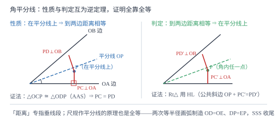

角的平分线的性质
角平分线上的点，到角两边的距离相等；反过来，到两边距离相等的点必在角平分线上。性质与判定一对互逆定理，证明都靠全等；尺规作角平分线的原理也是一次全等（SSS）。
| 所属主题 | 三角形 |
|---|---|
| 所属模块 | 几何 |
| 课标学段 | 第四学段（7~9 年级） |
| 前置知识 | 全等三角形、尺规作图 |
| 核心素养 | 推理能力几何直观 |
教材定位
人民教育出版社《人教版（2024版）义务教育教科书·数学》
八年级上册第14章 全等三角形14.3 角的平分线
对应八上 14.3 角的平分线：尺规作角平分线（依据 SSS）、性质定理与判定定理（互逆）。七上只把角平分线当作一条射线（见 m2-01-02），本篇才给它的核心性质——「点到两边距离相等」。
说明
角的平分线是把这个角分成两个相等的角的射线。七年级只知道它是一条特殊的射线；八年级学完全等之后，它长出了两条真正有力气的定理。性质定理：角的平分线上的点到角的两边的距离相等。判定定理：角的内部到角的两边的距离相等的点在角的平分线上。这里说的「距离」专指垂线段的长度——从点向两边作垂线，量垂线段的长度，斜线段的长度不算数。
尺规作角平分线的做法与原理：以角的顶点 O 为圆心、适当长为半径画弧，交角两边于 D、E 两点；再分别以 D、E 为圆心、大于 1/2DE 的长为半径画弧，两弧在角内部交于点 P；作射线 OP，即为角平分线。原理是一次全等：OD=OE（第一次作图半径相同）、DP=EP（第二次作图半径相同）、OP=OP（公共边），由 SSS 得 \triangle ODP\cong\triangle OEP，故 \angle DOP=\angle EOP。
性质与判定是一对互逆定理：条件与结论互换。性质说「在平分线上 ⇒ 距离相等」，判定说「距离相等 ⇒ 在平分线上」。互逆定理各自独立证明，不能互相当作对方的理由。几何里见到「到角两边距离相等」的条件，第一反应就是连出角平分线；见到「角平分线」，第一反应就是向两边作垂线——这两组辅助线是后续几何证明的常备动作。
使用场景
选址问题天然是角平分线：加油站、水泵站、监测站要「到两条公路（河道）的距离相等」，选址点就在两路夹角的平分线上。这是判定定理最直接的应用场景。
几何证明与计算里，角平分线与垂线段是黄金搭档：题给角平分线就作垂线段构造全等或直接用性质转移距离；求三角形面积时角平分线上的点向两边作垂线，两边面积可以互相表示。
注意点
「到角两边的距离」必须是垂线段的长度：过点向两边作垂线，量垂线段。若画的不是垂线，量出的长度不相等也不矛盾——性质定理对斜线段没有任何承诺。
性质与判定不能循环使用：证明「距离相等」时引判定作依据是循环论证。证性质用全等（AAS），证判定也用全等（HL），两条独立证据链。
角的平分线是射线，只在角的内部：点若在角平分线的反向延长线上，它到两边所在直线的距离虽然相等，但对「角」的两边（射线）不构成到边的距离，判定叙述时要写「角的内部」。
证明

图 1：左为性质（在平分线上 ⇒ 距离相等），右为判定（距离相等 ⇒ 在平分线上）；两条垂线段是「点角距离」的唯一合法量法
证明
结论 1尺规作角平分线的两弧交点必在角平分线上，依据是 SSS 全等。
记第一次画弧交两边于 D、E，第二次两弧交于 P。\triangle ODP 与 \triangle OEP 中：OD=OE（第一次作图用同一半径，O 到两边上两交点的距离同为半径），DP=EP（第二次作图用同一半径），OP=OP（公共边）。三边对应相等，SSS 得全等，对应角 \angle DOP=\angle EOP，射线 OP 把角二等分。作图不是「大概齐」的操作，每一步圆规动作都在偷偷制造相等线段，全等把这些相等兑现成两角相等。
关键一步依据是 SSS；两次相同半径的画弧分别保证 OD=OE 与 DP=EP。
结论 2性质定理成立：角平分线上的点到两边距离相等。
设 P 在 \angle AOB 的平分线上，PC\perp OA 于 C，PD\perp OB 于 D。在 \triangle OCP 与 \triangle ODP 中：\angle OCP=\angle ODP=90°（垂直），\angle COP=\angle DOP（平分），OP=OP（公共边）。两角及其中一角的对边对应相等，AAS 得全等，对应边 PC=PD。即 P 到两边距离相等。验算一个特例：取 \angle AOB=90°、OP 平分它，OP=\sqrt2 时 OC=OD=1、PC=PD=1，垂线段长度确实相等 ✓。
关键一步依据是 AAS 全等；「距离」由垂直定义，垂足 C、D 就是全等三角形的对应点。
结论 3判定定理成立：角的内部到两边距离相等的点在角平分线上，且它与性质互逆而独立获证。
设 P 在 \angle AOB 内部，PC\perp OA 于 C，PD\perp OB 于 D，且 PC=PD。在 Rt\triangle OCP 与 Rt\triangle ODP 中：OP=OP（公共斜边），PC=PD（已知直角边）。斜边与一条直角边对应相等，HL 得全等，对应角 \angle COP=\angle DOP，故 OP 平分 \angle AOB，P 在角平分线上。注意证明用的是 HL 而非 AAS，条件与结论都换了——这条证据链与性质那条互不相干，互逆不等于互相推出。
关键一步依据是 HL 全等；性质（AAS）与判定（HL）各自独立证明。
动手实验
裁一张纸对折出一道折痕 OP，随意张开一个角 \angle AOB，再沿 OP 折一次，角两边重合——OP 平分角。接着在 OP 上任取一点 P，把纸沿「过 P 垂直于 OA」的方向折出垂线段 PC，同样折出 PD，用刻度尺量 PC 与 PD，两者相等。换 OP 上另一点重做，仍然相等；在纸的区域里取一个不在 OP 上的点，量出的两条斜线段长就不等。折纸十分钟，把「在⇒等」与「不在⇒不等」一次看全，这正是性质与判定合起来的样子。
解题思路
角平分线的两个条件反射：见角平分线，作垂线段（向两边作垂线，立刻得到两条相等的距离）；见两边距离相等，连顶点（连出的射线就是角平分线，制造出两个相等的角）。这两组辅助线覆盖了八年级以后大半的角平分线题。
证两条线段相等而它们恰好是「点到两边」的线段时，优先考虑角平分线：要么用性质直接写相等（已知在平分线上），要么证两点都在平分线上再转移。
角平分线 + 三角形面积的组合算法：设角平分线 AD 上任一点向两边 AB、AC 作垂线段长均为 h，则 S_\triangle ABD=1/2AB\cdot h，S_\triangle ACD=1/2AC\cdot h，两块面积之比就是 AB:AC——不用求任何线段的具体值。
按场景的例题
例 1（场景：方案选择） 加油站选址
两条公路在路口 O 处相交成 60° 角，加油站要求建到两条公路的距离都相等的位置，且到路口 O 的距离为 200 米。问加油站应建在哪个方向上？它到每条公路的距离是多少？
解：到两条公路距离相等的点在夹角平分线上，故加油站建在 60° 角的平分线上、距 O 点 200 米处。设加油站为 P，向两边作垂线段 PC、PD，则 PC=PD，且 \triangle OCP 中 \angle COP=30°、\angle OCP=90°。直角三角形中 30° 角所对的直角边等于斜边的一半：PC=1/2OP=100 米。验算：OC=OP\cos 30°=200×\frac\sqrt32=100\sqrt3\approx 173.2，PD=100，PC=PD ✓。
答：建在 60° 夹角平分线上、距路口 200 米处；到每条公路的距离都是 100 米。
例 2（场景：测量与工程） 角平分线求距离
在 \triangle ABC 中，\angle C=90°，AC=6，BC=8，AB=10。AD 平分 \angle BAC 交 BC 于 D，过 D 作 DE\perp AB 于 E。求 DE 的长。
解：AD 平分 \angle BAC，DC\perp AC（\angle C=90°），DE\perp AB，由性质定理 DE=DC。设 DE=DC=x，则 BD=8-x。用面积：S_\triangle ABC=1/2× 6× 8=24；又 S_\triangle ABC=S_\triangle ABD+S_\triangle ACD=1/2× 10× x+1/2× 6× x=8x。解得 x=3。验算：S_\triangle ABD=1/2× 10× 3=15，S_\triangle ACD=1/2× 6× 3=9，15+9=24 ✓。
答：DE=3。
例 3（场景：图形设计） 圆规作图验收
设计图纸上要把一个已知角二等分，绘图员用尺规作图：以顶点 O 为圆心、5 厘米为半径画弧交两边于 D、E；再以 D、E 为圆心、6 厘米为半径画弧交于 P，作射线 OP。①说明 OP 平分该角的理由；②求 D、E 两点的距离的取值条件。
解：①OD=OE=5（第一次作图），DP=EP=6（第二次作图），OP=OP 公共，SSS 得 \triangle ODP\cong\triangle OEP，对应角 \angle DOP=\angle EOP，故 OP 平分该角。②第二步画弧要有交点 P，须满足三角形存在条件：\triangle DEP 中 6+6>DE 且 6<6+DE，即 0<DE<12；而 DE 由第一次作图决定（圆心角对应的弦——圆心角、弦九年级后面才学，这里提前借用），只要原角小于 180° 弦长就小于直径 10，且 DE 可实现。所以第二次半径取「大于 1/2DE」正是保证 6+6>DE、两弧必相交的操作化表述。
答：①SSS 全等使两角相等；②第二次半径须大于 1/2DE，保证两弧相交。
常用推论
三角形三条角平分线交于一点（内心），内心到三边距离相等——内切圆的圆心正是这样找到的（「内切圆」九年级后面才学，这里提前借用）；这是性质定理在三角形里的直接推广。
角平分线是到两边「距离场」的等值线：把角内每点到两边的距离差画出来，差为零的点连起来恰是平分线。「等距」的几何语言就是这条射线。
性质定理与中垂线性质构成一对姊妹：中垂线是「到两端点等距」的点的轨迹，角平分线是「到两边等距」的点的轨迹；两条轨迹将来都长成重要定理（垂直平分线性质与内心）。
易错点
错点在角平分线上，就认为它到两边「任意连线段」的长度都相等。
为什么错性质定理说的是「距离」，距离专指垂线段的长度；斜线段长度一般不相等。
正确过点向两边作垂线，两条垂线段的长度才相等；斜线段无此承诺。
错证明判定定理时说「由性质定理知它到两边距离相等，所以……」。
为什么错判定与性质条件结论互换，用对方证自己是循环论证。
正确判定定理用 HL 独立证明（公共斜边 + 相等直角边），不经过性质定理。
错只变符号不动脑子地把性质写成「角平分线上的点到两边的距离分别是 1/2 的两倍」之类。
为什么错性质是定性的相等关系，不给出具体数值；数值要靠全等或解三角形算出来。
正确性质只保证 PC=PD；具体长度由已知条件计算（如例 2 的面积法）。
直观理解
角平分线是一条「公平线」：住在它上面的任何点，到两条边的距离都一样远——站在河边两条支流的分岔线上挑一个取水点，走到两条河岸都不偏不倚。反过来，谁若真的到两边一样远，谁就必然站在公平线上，想藏都藏不住。而圆规画两道弧找到的交点，就是这条公平线的住址——SSS 全等是它的房产证。